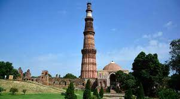
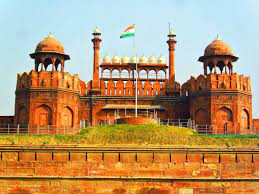
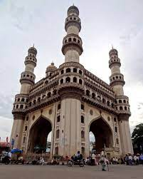
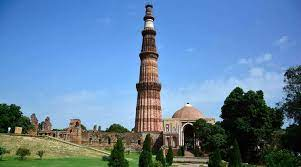
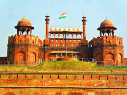
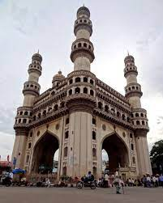

About India
Home to the Indus Valley Civilizaion and a region of historic trade routes and vast empires,the indian subcontinent was identified with its commericial and cultural wealth for much of its long history.Four major world religious,Hinduism,Buddhism,Jainism and Sikhism originated there,while Zoroastrianism,Judiasm,Christarinity and Islam arrived in the first millennium CE and shaped the region's diverse culture.India got its independence on 15thAugust,1947.It was the day when the Indians got liberated from the rule of British. Agriculture is not only the dominant occupations of the people of India but
is also one of the most important economic sectors for the country.
| Places to visit | How to Travel? | Visitors Guide Map |
|---|